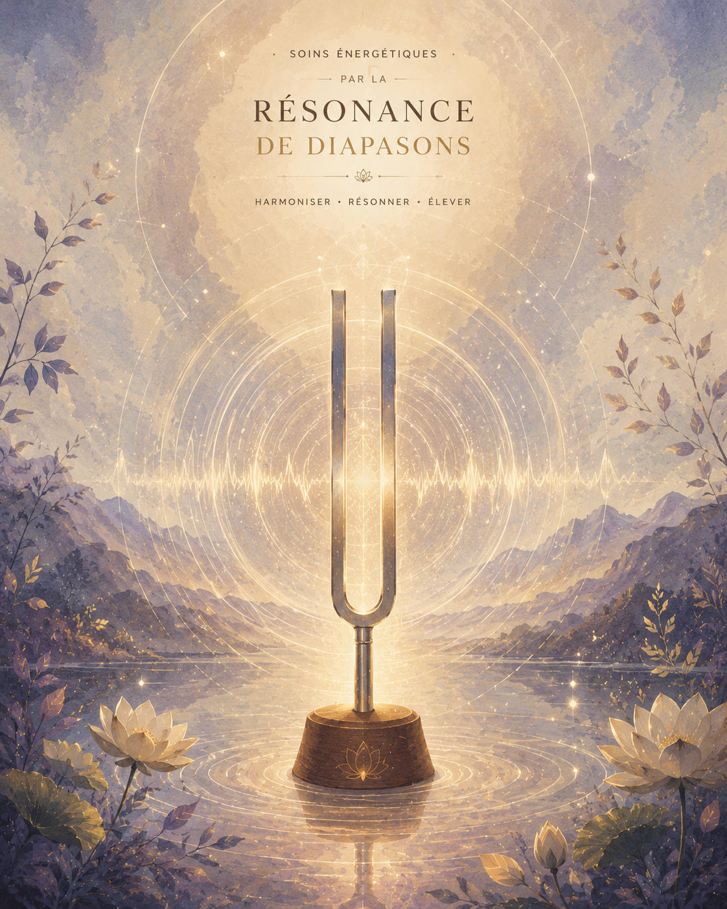

Soins avec diapasons thérapeutiques
La sonothérapie par diapasons est un soin vibratoire et acoustique qui utilise les fréquences sonores pour réharmoniser le corps et l'esprit.

Là où le massage classique travaille sur la matière par le toucher, les diapasons travaillent par la vibration pure. Posés délicatement sur des points précis du corps (points d'acupuncture, articulations, chakras) ou activés dans le champ énergétique, ils envoient des micro-vibrations qui se diffusent en profondeur dans les tissus, les os et les fluides corporels.L'origine
L'utilisation du son dans l'optique de soulager les maux ou de guérir remonte à des millénaires (bols tibétains, chants sacrés, gongs). Cependant, l'utilisation médicale et thérapeutique des diapasons s'est développée au XXᵉ siècle, notamment par l'intermédiaire de Peter Guy Manners (vers 1960~), Ostéopathe britannique s'étant appuyé sur les travaux du scientifique Suisse Hans Jenny pour développer la thérapie cymatique (article en anglais) et par Fabien Maman, musicien/compositeur et acupuncteur français, qui a publié de manière indépendante ses études, comme dans Le Tao du Son : Thérapie Sonique.
Ces études n'ont pas été appuyées par le milieu scientifique. Cela ne signifie pas que ce qui est dit est faux, mais rien ne démontre scientifiquement, à ce stade, les bienfaits de leurs études. Cependant, et c'est très important de le mentionner, des études plus récentes ont en effet établi des liens entre les cellules, le son et une activité cellulaire. Si le sujet vous intéresse, je vous encourage à vous penchez sur les travaux de :
- Article basé sur un article de l'Université de Kyoto (2025), en français
- Mitochondries et Vibrations (article original (2024), en anglais)
- L'impact vibratoire sur la santé (article original (2021), en anglais)
Les fréquences & leurs rôles
Chaque fréquence possède des propriétés biologiques et vibratoires bien spécifiques. Lors d'une séance, j'utilise une synergie de diapasons adaptés aux différentes zones de votre corps :
Le 128 Hz —
Soins & Détente du haut du corps
Le 128 Hz produit une vibration profonde qui détend les muscles, apaise le système nerveux, réduit l'inflammation et favorise la libération d'oxyde nitrique (qui améliore la circulation sanguine et procure un apaisement immédiat).
Le 64 Hz —
Ancrage profond & Bas du corps
Utilisé pour le bas du corps, le 64 Hz agit en résonance avec la terre. Il aide à libérer les tensions, stimule les articulations et offre un sentiment de sécurité et d'ancrage très fort.
Le 136,10 Hz —
La fréquence OM (Le soin du Cœur)
C'est la fréquence fondamentale de la Terre (l'année terrestre) et du chakra du cœur. Vibrant à la fréquence du calme universel, le 136,10 Hz apporte un réconfort émotionnel profond, réharmonise le centre cardiaque, dissipe l'anxiété et ramène l'esprit dans un état de paix et de méditation.
Le 32 Hz —
Harmonisation du Champ Énergétique (Aura)
Activité subtilement dans l'aura autour du corps, cette fréquence très basse et douce vient nettoyer, lisser et fortifier les enveloppes énergétiques. Elle aide à dissiper les pollutions vibratoires et à restaurer la fluidité des énergies qui vous entourent.
Les bienfaits
Quels sont les bienfaits d'un soin aux diapasons ?
Sur le plan physique
- Soulagement des douleurs: Atténue les tensions musculaires, raideurs articulaires et douleurs chroniques.
- Relaxation du système nerveux: Fait rapidement passer le corps d'un état de stress (sympathique) à un état de repos profond (parasympathique).
- Amélioration de la circulation: Stimule la circulation sanguine et lymphatique par micro-massages cellulaires.
Sur le plan émotionnel / mental
- Libération du mental: Arrête le flux continu des pensées et plonge dans un état de méditation spontanée.
- Apaisement du stress et de l'anxiété: Calme les angoisses et favorise un sommeil réparateur.
- Harmonisation émotionnelle: Libère les blocages ou émotions cristallisées dans le corps.
Sur le plan énergétique
- Réalignement global: Harmonise le flux d'énergie le long de la colonne vertébrale et des méridiens.
- Nettoyage de l'aura: Restaure l'équilibre et la protection de votre champ vibratoire.
Comment se déroule une séance ?
Allongé(e) confortablement sur la table de soin, vous vous laissez porter par le son et les vibrations. J'active les diapasons et les pose doucement sur des points clés de votre corps ou les fais circuler au-dessus de vous. Vous ressentez une vague de détente physique immédiate, accompagnée d'un voyage sonore doux et profondément ressourçant.
Convaincu ? Curieux ? N'hésitez pas à...
Prendre contact
Ou encore à parcourir les autres soins